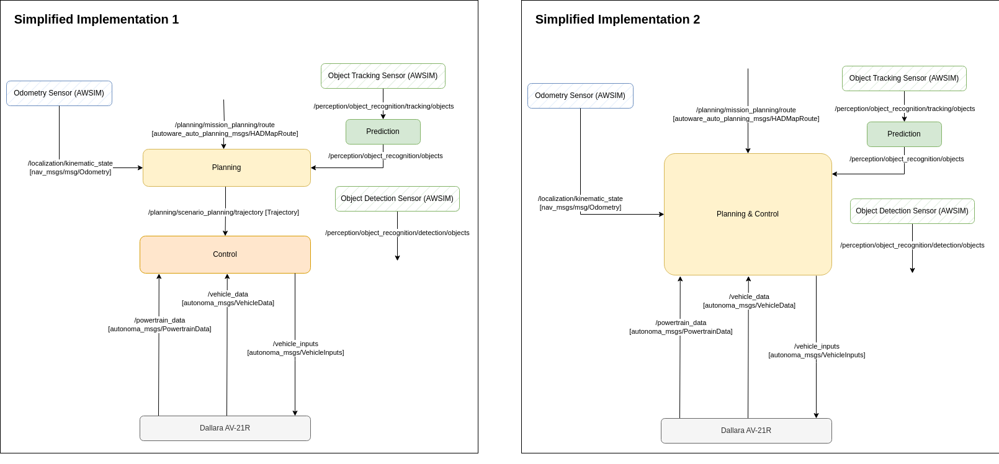

Customizing Autoware
For this conference, we have prepared an implementation based on the Autoware automated driving software.
This page provides background and explanation of the implementation, as well as an introduction of how this implementation can be utilized.
At the last Integration Conference, we provided a launch file for Autoware-Mini, a reduced version of Autoware with fewer nodes and fewer functions than the default Autoware. Please refer to the document of the previous conference for the background and the intention behind the preparation of the launch file.
For this simulation conference, we have prepared "Autoware-Micro," the smallest configuration of Autoware, which is designed for use with AWSIM, in order to enable partial use of Autoware and flexible incorporation of Autoware.
Background on Autoware-Micro
Challenges when using Autoware
The default Autoware consists of many nodes to support various driving environments.
The official documentation of Autoware includes a diagram of the ROS nodes that make up Autoware. The current diagram is shown below.

A wide variety of functions are available in each component involved in automated driving, and they are designed to cope with challenging driving environments.
On the other hand, it is not always easy to understand the complex configuration, to understand the meaning of each parameter and how to adjust it, and to switch and replace modules.
Preparing Autoware-Mini
For this reason, at the last Integration Conference, we prepared a launch file to start Autoware-Mini, which is a reduced version of Autoware with fewer nodes and fewer functions than the default Autoware.
The node diagram of Autoware-Mini is shown below. You can see that the number of nodes has been dramatically reduced, and only the functions that enable basic automatic driving are available.
Autoware-Mini has the following features:
- Almost all nodes are started directly from a single Launch file. In the existing Autoware, the Launch file is divided into multiple files, and it is necessary to go through several Launch files to get to the point where the node is actually started.
- Since parameters are written directly at node startup, it is easy to follow which parameters are needed for which node.
- The ROS topic name, which is the input/output of each node, is also directly remapped at node startup, so the topic name can be easily changed.
By writing automated software based on this Autoware-Mini, the following can be done.
- Understand the contents of Autoware more deeply because of its simple structure.
- Easily replace your own modules with Autoware's and work on improving functionality
- Easy to understand the impact of changing parameters on the overall system behavior
- You can also add existing Autoware nodes that are not included in this version of Autoware-Mini.
Preparing Autoware-Micro
The simulation competition will be a high-speed automated racing competition, and rather than using Autoware as-is, we will use Autoware as a base for example implementations, which will be extended and customized by participants.
In addition, in order to allow as many participants as possible to participate in the competition, we have made sure that the PC specifications required for participation are broad enough.
Against this background, we are modifying Autoware-Mini and trying to realize the following as "Autoware-Micro".
- The number of nodes is further reduced from Autoware-Mini to a simple configuration that can be easily customized.
- The number of nodes will be further reduced from Autoware-Mini to a simpler configuration that is easy to customize.
- Add a new Vehicle Interface to support racing vehicles in AWSIM.
Thus, in order to enable partial use and flexible incorporation of Autoware, we have prepared "Autoware-Micro," the smallest configuration designed for use with AWSIM.
The node diagram of Autoware-Micro is as follows.
Changes and features of each component of Autoware-Micro compared to Autoware-Mini are as follows.
- Localization: By outputting the Ground Truth of the self-position from AWSIM, the self-position estimation process is partially omitted.
- Perception: By outputting the ground truth of object recognition results from AWSIM, sensing and object recognition processing can be omitted, while focusing on object behavior prediction.
- Planning: Omit behavior_velocity_planner, obstacle_stop_planner, etc., and directly output the travel trajectory from the output path.
- Control: Simple_pure_pursuit is provided as an example of control implementation.
- Vehicle: Convert Control output to vehicle control signals using raw_vehicle_cmd_converter, and connect to the AWSIM racing vehicle using the vehicle interface "dallara_interface".
How to use Autoware-Micro
By utilizing Autoware-Micro, the issues to be addressed in this competition will be:
- prediction of NPC vehicle behavior
- strategic route planning for overtaking, curves, etc.
- vehicle control at high speed
You can also experiment with slightly different implementations from Autoware's architecture, or create and introduce new custom nodes, using the example implementation of Autoware-Micro as a guide.
By incorporating your own node implementations, you can improve driving performance and increase the number of points.
For example, consider the following configuration, where "Planning" and "Control" are implemented and worked on respectively, or a node responsible for both "Planning & Control" can be implemented.
As long as the ROS topics of the route inputs and vehicle interface outputs match, you are free to customize it as you wish.

How to customize and use Autoware packages
- copy the original package and change the following
- package name
- Folder name
- code
- package.xml
- CMakeLists.txt
- place in aichallenge_submit
- modify launch file called from autoware_micro_awsim_launch
- Reference example: pose_initializer_custom (called from autoware_universe_launch/tier4_localization_launch/launch/util/util.launch.xml)